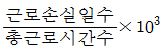
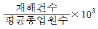
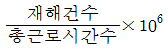
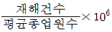
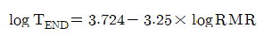
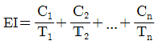
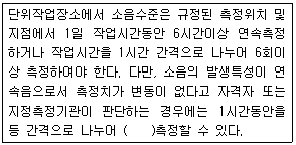
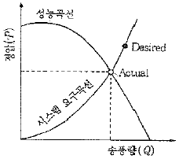
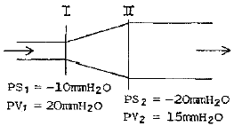

산업위생관리산업기사 (2012-05-20 기출문제)
1과목: 산업위생학 개론
1. 다음 중 일반적으로 근로자가 휴식 중일 때의 산소 소비량(oxygen uptake)은 어느 정도인가?
- 0.25L/min
- 0.75L/min
- 1.5L/min
- 5.0L/min
(정답률: 91%)

2. 다음 중 강도율을 올바르게 나타낸 것은?




(정답률: 74%)
3. 다음 중 중량물을 취급에 있어서 미국 NIOSH에서 중량물 최대허용한계(MPL)를 설정할 때의 기준으로 틀린 것은?
- MPL에 해당하는 작업은 LS/S1 디스크에 6400N의 압력을 부하
- MPL에 해당하는 작업이 요구하는 에너지대사량은 5.0kcal/min를 초과
- MPL을 초과하는 작업에서는 대부분의 근로자들에게 근육·골격 장애가 발생
- 남성 근로자의 50%미만과 여성 근로자의 10%미만에서만 MPL 수준의 작업수행이 가능
(정답률: 81%)
4. 다음 중 중독시 비중격천공을 일으키는 물질은?
- 수은(Hg)
- 아연(Zn)
- 카드뮴(Cd)
- 크롬(Cr)
(정답률: 90%)
5. 1일 12시간 톨루엔(TLV 50ppm)을 취급할 때 노출기준을 Brifer & Scala의 방법으로 보정하면 얼마가 되는가?
- 15ppm
- 25ppm
- 50ppm
- 100ppm
(정답률: 84%)
6. 다음 중 산업위생전문가로서의 책임에 대한 내용과 가장 거리가 먼 것은?
- 이해관계가 있는 상황에는 개입하지 않는다.
- 전문분야로서의 산업위생을 학문적으로 발전시킨다.
- 궁극적 책임은 기업주 또는 고객의 건강보호에 있다.
- 과학적 방법의 적용과 자료의 해석에서 객관성을 유지한다.
(정답률: 86%)
7. 기초대사량이 75kcal이고, 작업대사량이 4kcal/min인 작업을 계속하여 수행하고자 할 때, 다음 식을 참고할 경우 계속작업한계시간은 약 얼마인가? (단, TEND는 계속작업한계시간, RMR은 작업대사율을 의미한다.)

- 1.5시간
- 2시간
- 2.5시간
- 3시간
(정답률: 61%)
8. 산업안전보건법에서 정하고 있는 신규화학물질의 유해성·위험성 조사에서 제외되는 화학물질이 아닌 것은?
- 원소
- 방사성물질
- 일반 소비자의 생활용이 아닌 인공적으로 합성된 화학물질
- 고용노동부장관이 환경부장관과 협의하여 고시하는 화학물질 목록에 기록되어 있는 물질
(정답률: 83%)
9. 작업환경측정 및 정도관리 규정에 있어 시료채취 근로자 수는 단위작업장소에서 최고 노출근로자 몇 명 이상에 대하여 동시에 측정하도록 되어 있는가?
- 2명
- 3명
- 5명
- 10명
(정답률: 78%)
10. 1940년대 일본에서 발생한 중금속 중독사건으로, 이른바 이타이이타이(itai-itai)병의 원인물질에 해당하는 것은?
- 납(Pb)
- 크롬(Cr)
- 수은(Hg)
- 카드뮴(Cd)
(정답률: 83%)
11. 다음 중 산업피로에 관한 설명으로 적절하지 않은 것은?
- 고단하다는 객관적이고 보편적인 느낌이다.
- 작업강도에 반응하는 육체적, 정신적 생체현상이다.
- 피로 자체는 질병이 아니라 가역적인 생체 변화이다.
- 피로가 오래되면 얼굴 부종, 허탈감의 증세가 온다.
(정답률: 68%)
12. 다음 중 산업스트레스 발생요인으로 작용하는 집단 간의 갈등이 심한 경우 해결기법으로 가장 적절하지 않은 것은?
- 경쟁의 자극
- 상위의 공동목표 설정
- 문제의 공동해결법 토의
- 집단 구성원간의 직무순환
(정답률: 90%)
13. 다음 중 직업성 피부 질환에 영향을 주는 간접적 요인으로 볼 수 없는 것은?
- 아토피
- 마찰 및 진동
- 인종
- 개인위생
(정답률: 55%)
14. 다음 중 작업대사율이 7에 해당하는 작업을 하는 근로자의 실동률은 얼마인가? (단, 사이또와 오시마의 식을 활용한다.)
- 30%
- 40%
- 50%
- 60%
(정답률: 81%)
15. NIOSH에서는 권장무게한계(RWL)와 최대허용한계(MPL)에 따라 중량물 취급 작업을 분류하고, 각각의 대책을 권고하고 있는데 MPL을 초과하는 경우에 대한 대책으로 가장 적절한 것은?
- 문제있는 근로자를 적절한 근로자로 교대시킨다.
- 반드시 공학적 방법을 적용하여 중량물 취급작업을 다시 설계한다.
- 대부분의 정상근로자들에게 적절한 작업조건으로 현 수준을 유지한다.
- 적절한 근로자의 선택과 적정배치 및 훈련, 그리고 작업방법의 개선이 필요하다.
(정답률: 84%)
16. 다음 중 산업안전보건법에 의한 역학조사의 대상으로 볼 수 없는 것은?
- 건강진단의 실시결과만으로 직업성 질환에 걸렸는지 여부의 판단이 곤란한 근로자의 질병에 대하여 건강진단기관의 의사가 역학조사를 요청하는 경우
- 근로복지공단이 고용노동부장관이 정하는 바에 따라 업무상 질병 여부의 결정을 위하여 역학조사를 요청하는 경우
- 건강진단의 실시결과 근로자 또는 근로자의 가족이 역학조사를 요청하는 경우
- 직업성 질환에 걸렸는지 여부로 사회적 물의를 일으킨 질병에 대하여 작업장 내 유해요인과의 연관성 규명이 필요한 경우로 지방고용노동관서의 장이 요청하는 경우
(정답률: 82%)
17. 화학물질이 2종 이상 혼재하는 경우 다음 공식에 의하여 계산된 EI값이 1을 초과하지 아니하면 기준치를 초과하지 아니하는 것으로 인정할 때 이 공식을 적용하기 위하여 각각의 물질 사이의 관계는 어떤 작용을 하여야 하는가? (단, C는 화학물질 각각의 측정치, T는 화학물질 각각의 노출기준을 의미한다.)

- 가승작용(potentiation)
- 상가작용(additive effect)
- 상승작용(synergistic effect)
- 길항작용(antagonistic effect)
(정답률: 91%)
18. 다음 중 산업위생의 정의에 있어 4가지 활동에 해당하지 않는 것은?
- 관리(control)
- 평가(evaluation)
- 기록(record)
- 예측(anticipation)
(정답률: 75%)
19. 다음 중 사업장 내에서 발생하는 근골격계 질환의 특징으로 틀린 것은?
- 자각증상으로 시작된다.
- 환자의 발생이 집단적이다.
- 회복과 악화가 반복적이다.
- 손상 정도의 측정이 용이하다.
(정답률: 63%)
20. 다음 중 피로 측정 및 판정에 있어 가장 중요하며 객관적인 자료에 해당하는 것은?
- 개인적 느낌
- 작업능률 저하
- 생체기능의 변화
- 작업자세의 변화
(정답률: 65%)
2과목: 작업환경측정 및 평가
21. 일산화탄소 2m3가 10000m3의 밀폐된 작업장에 방출되었다면 그 작업장내의 일산화탄소 농도(ppm)는?
- 2
- 20
- 200
- 2000
(정답률: 44%)
22. 톨루엔(Toluene, MW=92.14) 농도가 50ppm로 추정되는 사업장에서 근로자 노출농도를 측정하고자 한다. 시료 채취유량이 0.2L/min, 가스크로마토그래프의 정량한계가 0.2mg이라면 채취할 최소시간은? (단, 1기압 25℃기준)
- 3.2분
- 4.1분
- 5.3분
- 7.5분
(정답률: 41%)
23. 소리의 음압수준이 87dB인 기계 10 대가 동시에 가동하면 전체 음압수준은?
- 약 93dB
- 약 97dB
- 약 104dB
- 약 108dB
(정답률: 73%)
24. 원자흡광광도계는 다음 중 어떤 종류의 물질 분석에 널리 적용되는가?
- 금속
- 용매
- 방향족 탄화수소
- 지방족 탄화수소
(정답률: 70%)
25. 물리적 직경 중 등면적 직경에 관한 설명으로 옳은 것은?
- 과대평가할 가능성이 있다.
- 가장 정확한 직경이라 인정받고 있다.
- 먼지의 한쪽 끝 가장자리와 다른 쪽 끝 가장자리 사이의 거리이다.
- 먼지의 면적을 2등분하는 선의 길이이다.
(정답률: 56%)
26. 100g의 물에 40g의 NaCI을 가하여 용해시키면 몇 %(W/W%)의 NaCI 용액이 만들어 지는가?
- 28.6%
- 32.7%
- 34.5%
- 38.2%
(정답률: 39%)
27. 석면의 공기 중 농도를 표현하는 표준단위로 사용하는 것은?
- ppm
- ㎛/m3
- 개/cm3
- mg/m3
(정답률: 88%)
28. 에틸렌글리클이 20℃, 1기압에서 증기압이 0.⑤mmHg이면 포화농도(ppm)는?
- 약 44
- 약 66
- 약 88
- 약 102
(정답률: 73%)
29. 다음 중 1차 표준기구에 해당 되는 것은?
- Spirometer
- Thermo-anemometer
- Rotameter
- Wet-test meter
(정답률: 64%)
30. 검지관의 장단점에 대한 설명으로 옳지 않은 것은?
- 사전에 측정대상물질의 동정이 불가능한 경우에 사용한다.
- 다른 방해물질의 영향을 받기 쉬워 오차가 크다.
- 민감도가 낮아 비교적 고농도에서 적용한다.
- 다른 측정방법이 복잡하거나 빠른 측정이 요구될 때 사용할 수 있다.
(정답률: 63%)
31. 용광로가 있는 철강 주물공장의 옥내 습구흑구온도지수(WBGT)는? (단, 건구온도 : 32℃, 자연습구온도 : 30℃, 흑구온도 : 34℃)
- 30.5℃
- 31.2℃
- 32.5℃
- 33.4℃
(정답률: 82%)
32. 흡광광도법에서 세기 Io의 단색광이 시료액을 통과하여 그 광의 50%가 흡수되었을 때 흡광도는?
- 0.6
- 0.5
- 0.4
- 0.3
(정답률: 88%)
33. 다음 중 실리카겔에 대한 친화력이 가장 큰 물질은?
- 케톤류
- 방향족탄화수소류
- 올레핀류
- 에스테르류
(정답률: 79%)
34. 통계집단의 측정값들에 대한 균일성, 정밀성 정도를 표현하는 변이계수(%)의 산출식으로 옳은 것은?
- (표준오차÷기하평균)×100
- (표준편차÷기하평균)×100
- (표준오차÷산술평균)×100
- (표준편차÷산술평균)×100
(정답률: 57%)
35. 가스상 물질의 시료 포집시 사용하는 액체포집방법의 흡수효율을 높이기 위한 방법으로 옳지 않은 것은?
- 흡수용액의 온도를 낮추어 오염물질의 휘발성을 제한하는 방법
- 두 개 이상의 버블러를 연속적으로 연결하여 채취효율을 높이는 방법
- 시료채취속도를 높여 채취유량을 줄이는 방법
- 채취효율이 좋은 피리티드 버블러 등의 기구를 사용하는 방법
(정답률: 59%)
36. 입경이 10㎛이고 비중이 1.8인 먼지입자의 침강속도는?
- 0.36cm/sec
- 0.48cm/sec
- 0.54cm/sec
- 0.62cm/sec
(정답률: 70%)
37. 싸이클론 분립장치가 관성충돌형 분립장치보다 유리한 장점이 아닌 것은?
- 매체의 코팅과 같은 별도의 특별한 처리가 필요없다.
- 호흡성 먼지에 대한 자료를 쉽게 얻을 수 있다.
- 시료의 되튐 현상으로 인한 손실염려가 없다.
- 입자의 질량크기별 분포를 얻을 수 있다.
(정답률: 60%)
38. 다음은 작업장 소음 측정시간 및 횟수 기준에 관한 내용이다. ( )안에 내용으로 옳은 것은? (단, 고시 기준)

- 2회 이상
- 3회 이상
- 4회 이상
- 5회 이상
(정답률: 59%)
39. 습구온도 측정을 위해 아스만통풍건습계를 사용하는 경우, 측정시간 기준으로 옳은 것은? (단, 고시 기준)
- 25분 이상
- 20분 이상
- 15분 이상
- 5분 이상
(정답률: 79%)
40. 여과에 의한 입자의 채취기전 중 공기의 흐름방향이 바뀔 때 입자상물질은 계속 같은 방향으로 유지하려는 원리는 무엇인가?
- 관성충돌
- 확산
- 중력침강
- 차단
(정답률: 65%)
3과목: 작업환경관리
41. 공학적 작업환경관리 대책 중 격리에 해당하지 않는 것은?
- 저장탱크들 사이에 도량 설치
- 소음발생 작업장에 근로자용 부스 설치
- 유해한 작업을 별도로 모아 일정한 시간에 처리
- 페인트 분사공정을 함침 작업으로 실시
(정답률: 73%)
42. 열경련(Heat cramps)에 관한 설명으로 옳은 것은?
- 열경련인 환자는 혈중 염분의 농도가 높기 때문에 염분관리가 중요하다.
- 열경련 환자에게 염분을 공급할 때 식염정제가 사용되어서는 안 된다.
- 더운 환경에서 고된 육체적 작업으로 인한 수분의 고갈로 신체의 염분 농도가 상승하여 발생하는 고열장해이다.
- 통증을 수반하는 경련은 주로 작업시 사용하지 않는 근육을 갑자기 사용했을 때 발생한다.
(정답률: 60%)
43. 저온환경에서 발생하는 2도 동상에 관한 설명으로 옳은 것은?
- 심부조직까지 동결되어 조직의 괴사로 괴저가 발생하는 경우
- 지속적인 저온으로 국소의 산소결핍으로 인해 모세혈과의 벽이 손상된 경우
- 수포와 함께 광범위한 삼출성 염증이 일어나는 경우
- 혈관이 확장하여 발적이 발생된 경우
(정답률: 77%)
44. 다음 중 고열작업장의 작업환경 관리대책으로 옳지 않는 것은?
- 작업자에게 개인별로 국소적인 송풍기를 지급한다.
- 작업장 내 낮은 습도를 유지한다.
- 방수복(water-barrier)을 증발 방지복(vapor-barrier)으로 바꾼다.
- 열차단판인 알루미늄 박판에 기름먼지가 묻지 않도록 청결을 유지한다.
(정답률: 70%)
45. 100톤의 프레스 공정에서 측정한 읍압수준이 93dB(A)이었다. 근로자가 귀마개(NRR=27)를 착용하고 있을 때 근로자가 노출되는 음압 수준은? (단, OSHA 기준)
- 79.0dB(A)
- 81.0dB(A)
- 83.0dB(A)
- 85.0dB(A)
(정답률: 82%)
46. 감압에 따른 기포 형성량을 결정하는 요인과 가장 거리가 먼 것은?
- 조직에 용해된 가스량
- 조직순응 및 변이 정도
- 감압속도
- 혈류를 변화시키는 상태
(정답률: 67%)
47. 비전리 방사선인 극저주파 전자장에 관한 내용으로 옳지 않은 것은?
- 통상 1~300Hz의 주파수 범위를 극저주파 전자장이라 한다.
- 직업적으로 지하철 운전기사, 발전소 기사 등 고압전선 가까이서 근무하는 근로자들의 노출이 크다.
- 장기 노출시 피부장해와 안장해가 발생되는 것으로 알려져 있다.
- 노출범위와 생물학적 영향면에서 가장 관심을 갖는 주파수 영역은 전력 공급계통의 교류와 관련되는 50~60Hz범위이다.
(정답률: 49%)
48. 다음의 전리 방사선 중 입자방사선이 아닌 것은?
- α(알파)입자
- β(베타)입자
- γ(감마)입자
- 중성자
(정답률: 71%)
49. 사업장의 유해물질을 물리적, 화학적 성질과 사용목적을 조사하여 유해성이 보다 작은 물질로 대치한 경우와 가장 거리가 먼 것은?
- 아조 염료의 합성 원료인 벤지딘을 대신하여 디클로로벤지딘으로 전환한 경우
- 단열재로서 사용하는 석면을 유리섬유로 전환한 경우
- 금속 세척 작업에 사용되는 트리클로로에틸렌을 계면활성제로 전환한 경우
- 분체의 입자를 작은 입자로 전환한 경우
(정답률: 61%)
50. 소음 작업장 개인 보호구인 귀마개에 관한 설명으로 옳지 않은 것은?
- 귀마개는 좁은 장소에서 머리를 많이 움직이는 작업을 할 때 사용하기 편리하다.
- 오래 사용하여 귀걸이의 탄력성이 줄었을 대는 차음 효과가 떨어진다.
- 외청도에 이상이 없는 경우에 사용이 가능하며 또 이상이 없어도 사용시간에 제한을 받는다.
- 제대로 착용하는데 시간이 걸리고 요령을 습득하여야 한다.
(정답률: 62%)
51. 음의 강도(Sound Intensity, I)와 음의 음입(Sound Pressure, P)과의 관계를 옳게 설명한 것은?
- 음의 강도는 음의 음압에 정비례한다.
- 음의 강도는 음의 음압에 제곱에 반비례 한다.
- 음의 강도는 음의 음압에 반비례 한다.
- 음의 강도는 음의 음압에 제곱에 비례한다.
(정답률: 58%)
52. 방진대책 중 발생원대책으로 옳지 않는 것은?
- 가진력 증가
- 기초 중량의 부가 및 경감
- 탄성지지
- 동적흡진
(정답률: 63%)
53. 입경이 10㎛이고 비중 1.2인 입자의 침강속도 [cm/sec]는?
- 0.28
- 0.32
- 0.36
- 0.40
(정답률: 71%)
54. 사람이 느끼는 최소 진동역치는?
- 25±5 dB
- 35±5 dB
- 45±5 dB
- 55±5 dB
(정답률: 77%)
55. 저온환경이 인체에 미치는 영향으로 옳지 않는 것은?
- 식욕감소
- 혈압변화
- 피부현관의 수축
- 근육긴장
(정답률: 83%)
56. 방진마스크에 대한 설명 중 적합하지 않은 것은?
- 고체 분진이나 유해성 fume, mist 등의 액체입자의 흡입방지를 위해서도 사용된다.
- 필터는 여과효율이 높고 흡기저항이 낮은 것이 좋다.
- 충분한 산소가 있고 유해물의 농도가 규정 이하의 농도일 때 사용할 수 있다.
- 필터는 활성탄계, 실리카겔계가 가장 많이 사용 된다.
(정답률: 66%)
57. 작업장의 조명관리에 관한 설명으로 옳지 않는 것은?
- 간접조명은 음영과 현휘로 인한 입체감과 조명효율이 높은 것이 장점이다.
- 반간접조명은 간접과 직접조명을 절충한 방법이다.
- 직접조명은 작업면의 빛의 대부분이 광원 및 반사용 삿갓에서 직접 온다.
- 직접조명은 가구의 구조에 따라 눈을 부시게 하거나 균일한 조도를 얻기 힘들다.
(정답률: 65%)
58. 다음 중 고온의 영향으로 나타나는 일차적 생리적 영향은?
- 수분과 염분부족
- 신경계 장해
- 피부기능 변화
- 발한
(정답률: 50%)
59. 방진재료인 금속스프링에 관한 설명으로 옳지 않는 것은?
- 최대변위가 허용된다.
- 저주파 차진에 좋다.
- 감쇠가 거의 없다.
- 공전시 전달율이 작다.
(정답률: 42%)
60. 빛과 밝기의 단위 중 광도(luminous intensity)의 단위로 옳은 것은?
- 루엔
- 칸델라
- 룩스
- 푸트 램버트
(정답률: 70%)
4과목: 산업환기
61. 다음 중 약간의 공기 움직임이 있고 낮은 속도로 배출되는 작업조건에서 스프레이 도장작업을 할 때 제어속도[m/s]로 가장 적절한 것은? (단, 미국산업위생전문가협의회 권고 기준에 따른다.)
- 0.8
- 1.2
- 2.1
- 2.8
(정답률: 42%)
62. 다음 중 그림의 송풍기 성능곡선에 대한 설명으로 옳은 것은?

- 설계단계에서 예측했던 시스템 요구곡선이 잘 맞고, 송풍기의 선정도 적절하여 원했던 송풍량이 나오는 경우이다.
- 너무 큰 송풍기를 선정하고 시스템 압력손실도 과대 평가된 경우이다.
- 시스템 곡선의 예측은 적절하나 성능이 약한 송풍기를 선정하여 송풍량이 작게 나오는 경우이다.
- 송풍기의 선정은 적절하나 시스템의 압력손실 예측이 과대평가되어 실제로는 압력손실이 작게 걸려 송풍량이 예상보다 많이 나오는 경우이다.
(정답률: 63%)
63. 유입계수가 0.6인 플랜지 부착 원형후드가 있다. 이때 후드의 유입손실계수는 얼마인가?
- 0.52
- 0.98
- 1.26
- 1.78
(정답률: 63%)
64. 다음 중 전체환기를 설치하는 조건과 가장 거리가 먼 것은?
- 오염물질의 독성이 낮은 경우
- 오염물질이 한 곳에 집중되어 있는 경우
- 유해물질의 발생량이 대체로 균일한 경우
- 근무자와 오염원의 거리가 먼 경우
(정답률: 81%)
65. 다음 중 덕트의 설치를 결정할 때 유의사항으로 적절하지 않은 것은?
- 청소구를 설치한다.
- 곡관의 수를 적게 한다.
- 가급적 원형 덕트를 사용한다.
- 가능한 한 곡관의 곡률 반경을 작게 한다.
(정답률: 77%)
66. 다음 중 수평의 원형 직관 단면에서 층류의 유체가 흐를 때 유속이 가장 빠른 부분은?
- 관 벽
- 관 중심부
- 관 중심에서 외측으로 1/2지점
- 관 중심에서 외측으로 1/3지점
(정답률: 65%)
67. 공기정화장치의 입구와 출구의 정압이 동시에 감소 되었다면 국소배기장치(설비)의 이상 원인으로 가장 적절한 것은?
- 제진장치 내의 분진 퇴적
- 분지관과 후드 사이의 분진퇴적
- 분지관의 시험공과 후드 사이의 분진퇴적
- 송풍기의 능력저하 또는 송풍기와 덕트의 연결부위 풀림
(정답률: 79%)
68. 자연환기방식에 의한 전체환기의 효율은 주로 무엇에 의해 결정되는가?
- 대기압과 오염물질의 농도
- 풍압과 실내ㆍ외 온도 차이
- 오염물질의 농도와 실내ㆍ외 습도 차이
- 작업자 수와 작업장 내부 시설의 위치
(정답률: 81%)
69. 그림과 같은 덕트의 Ⅰ과 Ⅱ단면에서 압력을 측정한 결과 Ⅰ단면의 정압(PS1)은 -10mmH2O였고, Ⅰ과 Ⅱ 단면의 동압은 각각 20mmH2O와 15mmH2O였다. Ⅱ단면의 정압(PS2)이 -20mmH2O이었다면 단면 확대부에서의 압력손실(mmH2O)은 얼마인가?

- 5
- 10
- 15
- 20
(정답률: 49%)
70. 작업장내 열부하량이 15000kcal/h이며, 외기온도는 22℃, 작업장 내의 온도는 32℃이다. 이때 전체환기를 위한 필요환기량은 얼마인가?
- 83m3/h
- 833m3/h
- 4500m3/h
- 5000m3/h
(정답률: 53%)
71. 플랜지가 붙은 1/4원주형 슬롯형 후드가 있다. 포착 거리가 30cm이고, 포착속도가 1m/s일 때 필요송풍량[m3/min]은 약 얼마인가? (단, slot의 폭은 0.1m, 길이는 0.9m이다.)
- 25.9
- 45.4
- 66.4
- 81.0
(정답률: 38%)
72. 다음 중 국소배기장치의 설계시 송풍기의 동력을 결정할 때 가장 필요한 정보는?
- 송풍기 전압과 필요송풍량
- 송풍기 동압과 가격
- 송풍기 전압과 크기
- 송풍기 동압과 효율
(정답률: 73%)
73. 직경이 300mm인 환기시설을 통해서 150m3/min의 표준상태의 공기를 보낼 때 이 덕트 내의 유속[m/s]은 약 얼마인가?
- 25.49
- 31.46
- 35.37
- 41.39
(정답률: 54%)
74. 작업장의 크기가 세로 20m, 가로 10m, 높이 6m이고, 필요환기량이 80m3/min일 때 1시간당 공기교환횟수는 몇 회인가?
- 2회
- 3회
- 4회
- 5회
(정답률: 62%)
75. 다음 중 국소배기장치가 설치된 현장에서 가장 적합한 상황에 해당하는 것은?
- 최종 배출구가 작업장 내에 있다.
- 사용하지 않는 후드는 댐퍼로 차단되어 있다.
- 증기가 발생하는 도장 작업지점에는 여과식 공기 정화장치가 설치되어 있다.
- 여름철 작업장 내에 대형 선풍기로 작업자에게 바람을 불어주고 있다.
(정답률: 78%)
76. 다음 중 전기집진장치의 장점이 아닌 것은?
- 고온 가스의 처리가 가능하다.
- 설치면적이 적고, 기체상의 오염물질의 포집에 용이하다.
- 0.01㎛ 정도의 미세 입자의 포집이 가능하여 높은 집진효율을 얻을 수 있다.
- 압력손실이 낮고 대용량의 가스를 처리할 수 있다.
(정답률: 69%)
77. 다음 중 국소배기장치의 관내 유속이나 압력을 측정하는 기구가 아닌 것은?
- 피토관
- 열선식풍속계
- 타코메터
- 오리피스메터
(정답률: 42%)
78. 다음 중 공기를 후드로 끌어당기고(흡입기류) 불어주고(취출기류)하는 과정에서의 공기의 이동특성에 대한 설명으로 틀린 것은?
- 흡입기류는 취출기류에 비해서 거리에 따른 감소 속도가 적다.
- 흡입기류는 취출기류에 비해서 거리에 따른 감소 속도가 크다.
- 흡입기류가 취출기류에 비해서 거리에 따른 감소 속도가 크므로 후드는 가능하면 오염원에 가까이 설치해야 한다.
- 후드의 포착거리가 일정거리 이상일 경우 푸쉬-풀(push-pul)형 환기장치가 필요하다.
(정답률: 38%)
79. 다음 중 속도압, 정압, 전압에 관한 설명으로 틀린 것은?
- 정압과 속도압을 합하면 전압이 된다.
- 속도압은 공기가 이동할 때 항상 발생한다.
- 정압은 속도압과 관계없이 독립적으로 발생하며 대기압보다 낮을 때를 음압(-), 대기압보다 높을 때를 양압(+)이라 한다.
- 속도압이란 정지상태의 공기를 일정한 속도로 흐르도록 가속화시키는데 필요한 압력이며 공기의 운동에너지에 반비례한다.
(정답률: 57%)
80. 분압이 1.5mmHg인 물질이 표준상태의 공기 중에서 도달할 수 있는 최고 농도(용량농도)는 약 얼마인가?
- 0.2%
- 1.1%
- 2%
- 11%
(정답률: 50%)